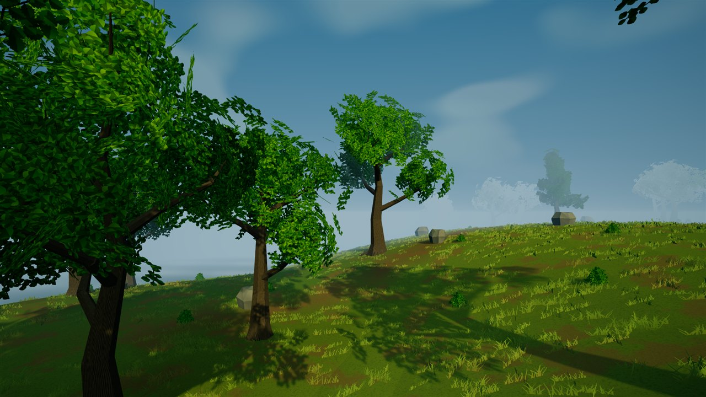
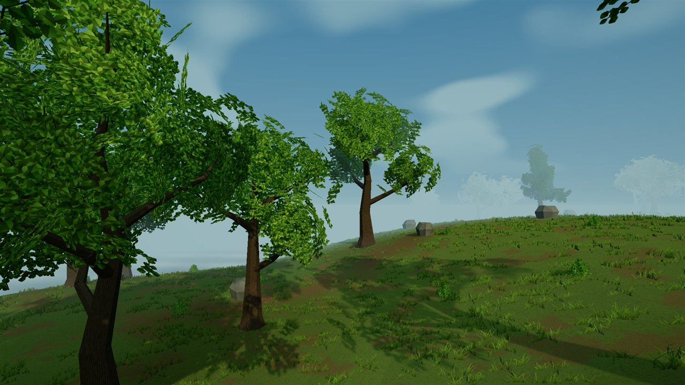
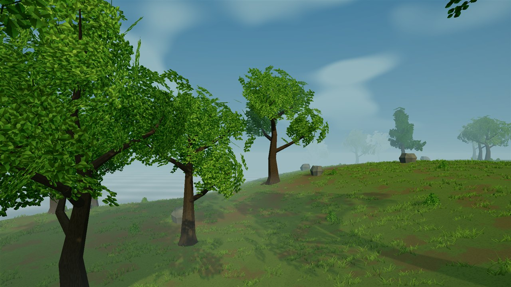
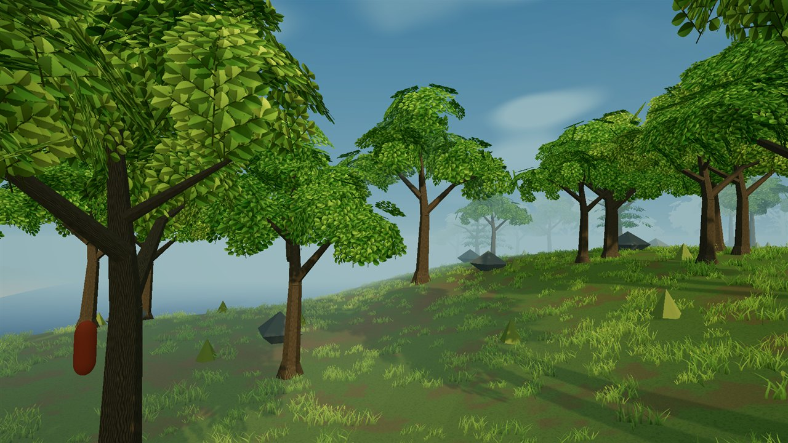

DAY / CANOPY COMPARISON
Under the branches
Deeper foliage, warmer backlighting, spatial anti-aliasing, and a shared directional sky/fog horizon. Earlier studies below show the progression.

Before distant landscape coverage
Study 05: the same camera with the earlier short fog boundary. The current view adds coarse visual-only terrain and tree silhouettes; wind can differ.

Before this rendering pass
Study 04: the same camera before SMAA, HDR capture and grading, foliage colours, grass-root blending, and directional horizon tint. Wind can differ between captures.

Before the lighting pass
Study 03: the same camera and procedural assets before the sunlight, ambient shading, and fog changes. Wind can differ between captures.

Forest study 02
The same camera before the branch-led tree, rock, and ground-cover changes.

Original procedural study
An earlier build using the same camera position, not another current lighting preset.
